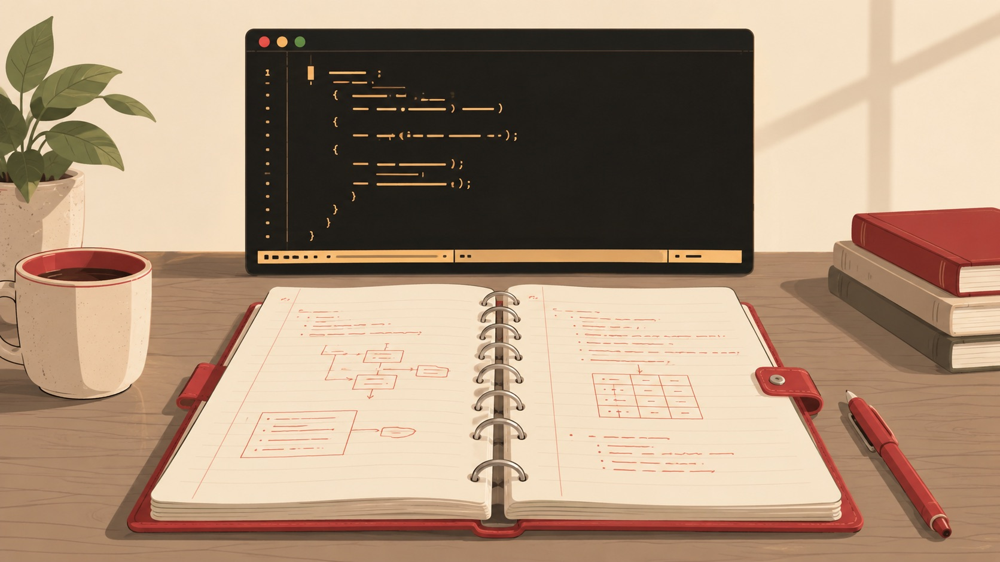

A Practice Notebook · Reading kilo.c Line by Line
Kilo as a
Systems-Programming
Case Study
A ~1000-line C text editor, taken apart and put back together — raw terminals, escape sequences, buffers, and the small decisions that make software work.
Told by The Crafter — motivation, design, implementation, edge cases, reflection

A clean, modern editorial illustration: a spiral-bound practice notebook lies open on a wooden desk, and just behind it floats a dark terminal window with glowing amber-cream VT100-style text showing a few lines of C code and a status bar, evoking the Kilo text editor. Warm cream-paper and red-pen-accent palette matching a binder theme (cream paper, red-orange accent ink, taupe desk), with the terminal window as a cool dark contrast panel. Flat vector editorial style, soft studio light, generous whitespace, no readable text baked into the terminal (implied code only), no logos. Target size ~1280x720px, 16:9 landscape; compose for a small on-page figure with the subject centred and safe margins — it is letterboxed into a 16:9 box, so keep nothing important near the edges.
Generate this with your image agent, then drop the file here.
Table of Contents
Twenty-two chapters, orientation to retrospective
Part I · Orientation
- Why build Kilo?the case for a tiny editor
- What a text editor must doloop, buffer, render, input, persist
- C and terminal prerequisiteswhat you need to follow along
Part II · The Terminal & The Loop
- Raw mode and key inputreading keystrokes directly
- Escape sequences and screen drawingVT100 cursor & redraw
- The refresh cycleread, react, repaint
Part III · Data & Navigation
- Editor statethe one struct that runs the show
- Text storagerows, tabs, render vs. file data
- Moving around the filecursor, scrolling, viewport
- Editing textinsert, delete, split, merge
Part IV · Files
Part V · Search & Highlighting
- Searchincremental find & temporary modes
- Syntax highlighting basicstokens, line parsing, color
- Highlighting C codekeywords, strings, comments, numbers
- File types and highlight rulesmaking it configurable
Part VI · Robustness
- Error handling and cleanuprestoring the terminal safely
- Portability and limitationsPOSIX assumptions, what's left out
Part VII · Beyond the Tutorial
- Refactoring Kilocleaner architecture, tradeoffs
- Adding features carefullyline numbers, undo, clipboard
- Testing a terminal appseparating logic from I/O
- Rebuilding the editor from memorythe full architecture, recapped
Every chapter follows the same beat: motivation, design, implementation, edge cases, reflection. Jump to the Cheatsheet →